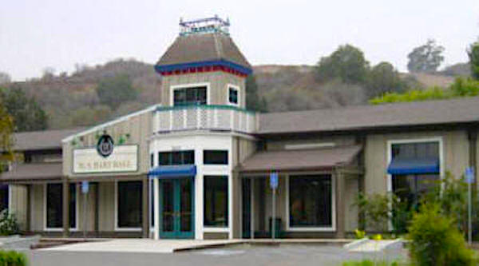

Located conveniently near the park entrance on Newhall Avenue, Hart Hall offers a spacious, versatile indoor venue perfect for large gatherings, community events, and private celebrations.
A Historic Resource: The building was originally constructed as a rustic "pole barn." Today, it is affectionately known by that name, as the massive raw timber poles were seamlessly preserved and incorporated as a striking architectural highlight of the interior design.
Perfect for Any Gathering
Whether you are organizing a formal presentation or a grand reception, the hall scales beautifully to accommodate your guest list:
- Assembly Layout: Comfortably holds up to 200 people for theater-style seating or standing meetings.
- Banquet Layout: Comfortably seats up to 120 guests for traditional sit-down dinners.
Included Amenities
Seating Assured
Full inventory of tables and chairs are provided with your rental package.
Caterer's Kitchen
A dedicated staging kitchen space on-site for streamlined meal preparation and service.
Outdoor Patio
An attached exterior patio space, ideal for cocktail hours or open-air mingling.